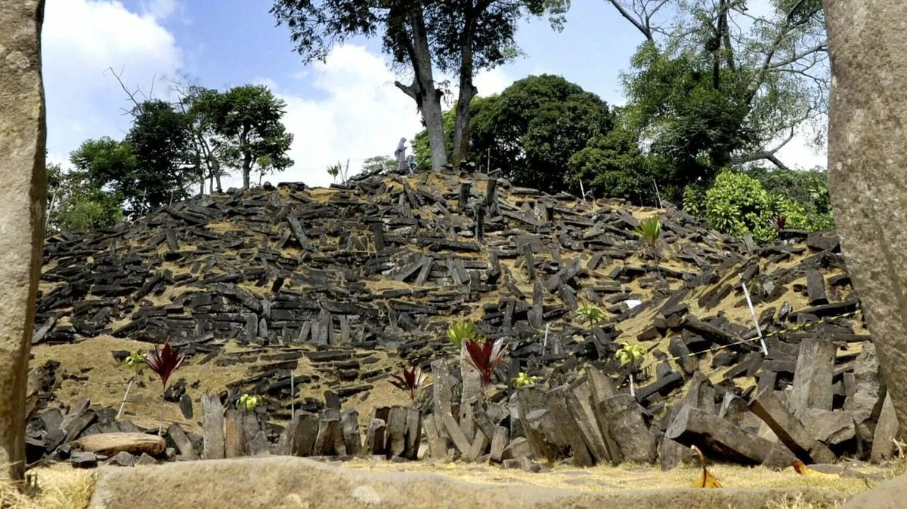

1. Monumen Megalitikum Terbesar
Situs Gunung Padang yang terletak di Cianjur, Jawa Barat, merupakan situs prasejarah peninggalan kebudayaan megalitikum terbesar di Asia Tenggara. Kompleks ini berbentuk **punden berundak** yang terdiri atas lima teras bertingkat. Seluruh permukaan situs ini ditutupi oleh ribuan batu tiang kolumnar (berbentuk balok persegi) yang terbuat dari batuan vulkanik alami purba.

2. Misteri Lapangan dan Usia Purbakala
Berbeda dengan bukit biasa, penelitian geologi menunjukkan bahwa di bawah permukaan tanah Gunung Padang terdapat struktur bangunan yang dibuat oleh tangan manusia dari beberapa lapis zaman. Beberapa pengujian penanggalan karbon mengindikasikan bahwa bagian terdalam dari situs ini berusia ribuan tahun sebelum masehi, menjadikannya salah satu struktur buatan manusia tertua di dunia yang masih diteliti hingga kini.
Pentingnya Pelestarian
Sebagai sebuah cagar budaya, Gunung Padang menjadi bukti penting bahwa Nusantara telah memiliki peradaban dan kemampuan arsitektur yang sangat maju sejak ribuan tahun yang lalu. Menjaga keaslian struktur batunya adalah tugas bersama generasi muda.